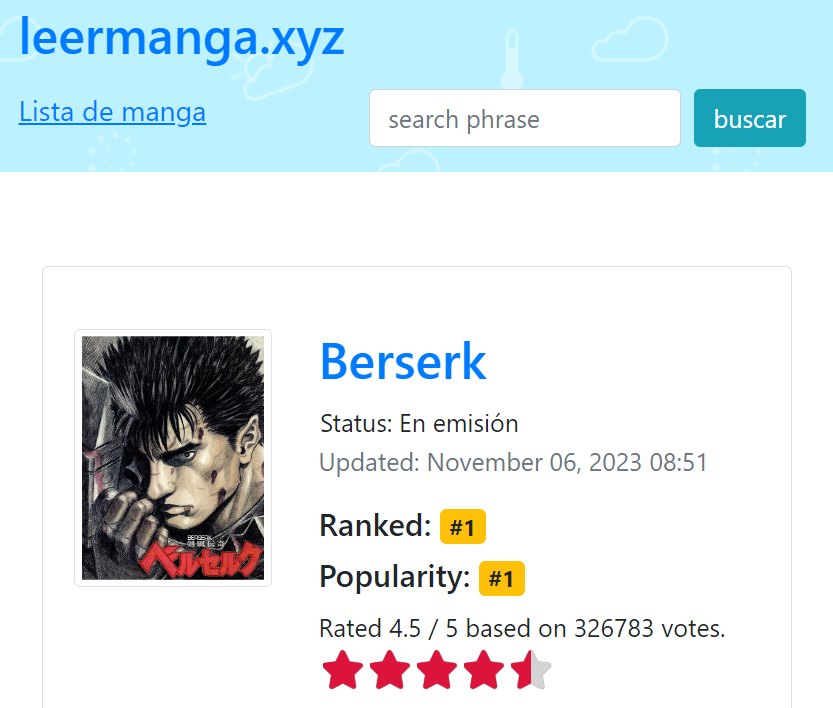
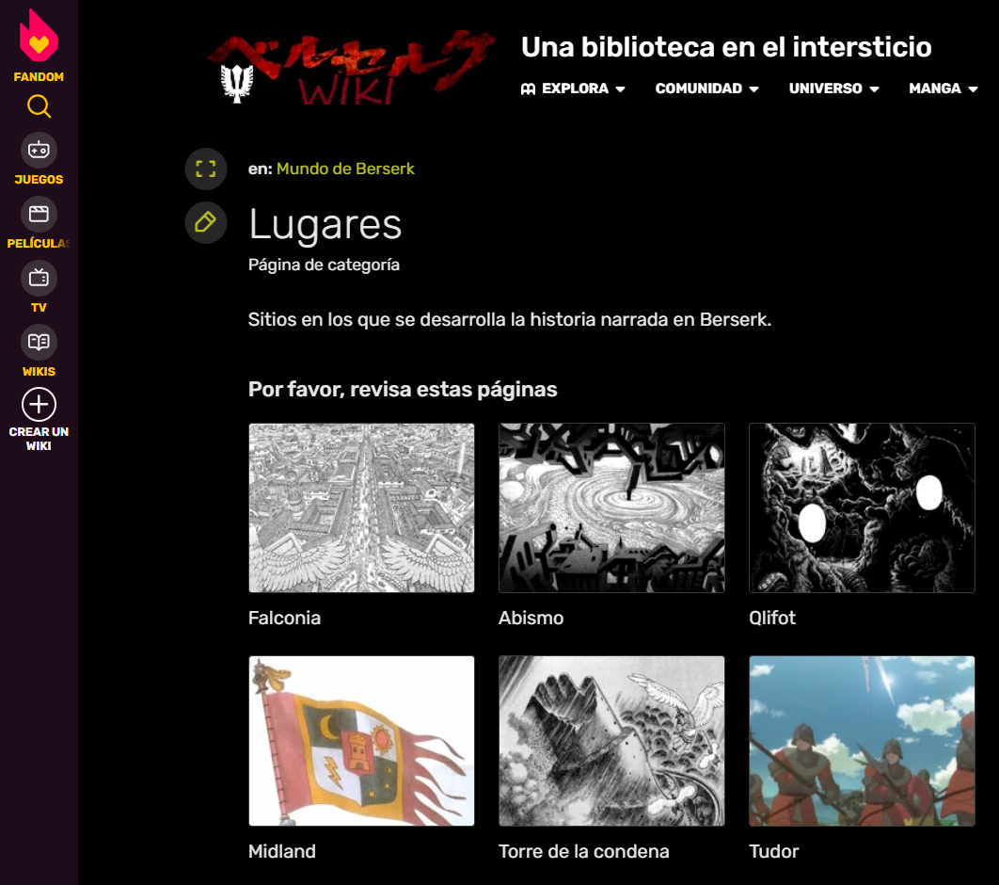

Otras Webs

Netflix Berserk (1997)
Netflix es un servicio de streaming que funciona mediante una suscripción de pago y cuenta con más de 17.000 títulos en todo el mundo.
El anime de Berserk (1997), de 25 capítulos se encuentra disponible en Netflix desde diciembre de 2022.
